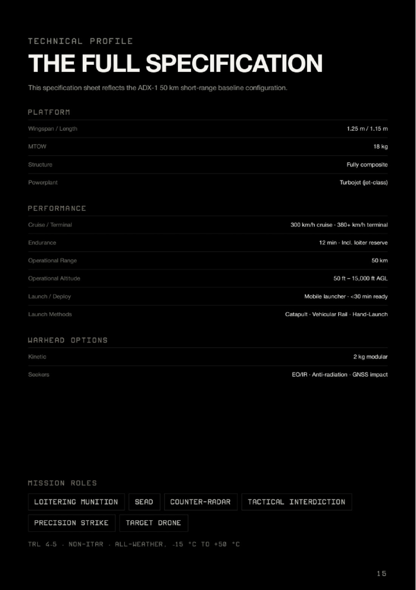
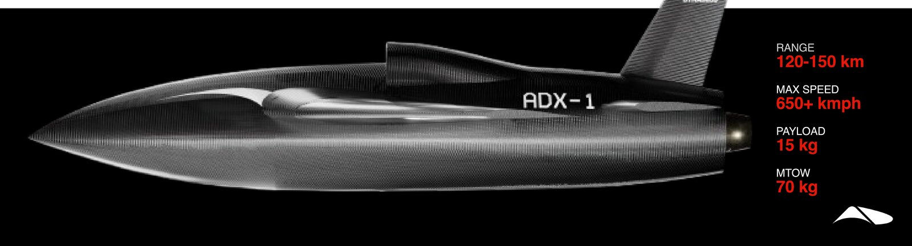
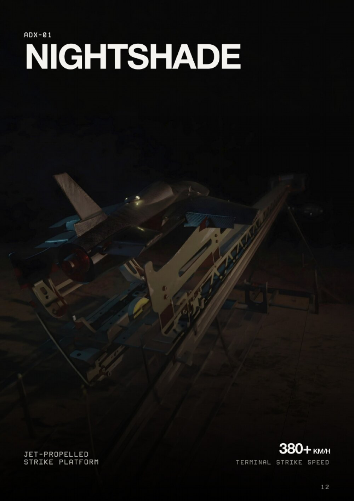
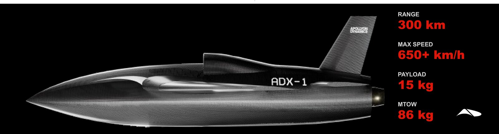

Nightshade ADX-1 the machine goes first
A turbojet-powered, high-performance autonomous vehicle built to bridge the gap between expendable drones and cruise missiles. It was designed around one uncomfortable truth: the first moments of contact are the most dangerous, and they should be borne by a machine rather than a soldier.
ADX-1 baseline
The at-a-glance sheet below reflects the Mk I 50 km short-range baseline — the configuration that has flown. Range-extended marks are tabulated in §02.

Three marks, one airframe family
The marks differ mainly in fuel fraction, take-off weight and seeker fit. Structure, guidance philosophy and launch interface are common, which is why a mark change is a package change rather than a new programme.
| Parameter | Mk I | Mk II | Mk III |
|---|---|---|---|
| Range | 50 km | 300 km | 120–150 km |
| Max speed | 380+ km/h terminal | 650+ km/h | 650+ km/h |
| Cruise | 300 km/h | — | — |
| Payload | 2 kg modular | 15 kg | 15 kg |
| MTOW | 18 kg | 86 kg | 70 kg |
| Endurance | 12 min | — | — |
| Terminal guidance | Vision / GNSS impact | Day/night vision homing | Terminal homing · MITL option |
| Control mode | Autonomous · pre-planned | Autonomous · pre-planned | Autonomous · man-in-the-loop · pre-planned |
| Status | Flown Jun 2026 | Development | Development |

What it is fired at
One airframe, swappable seekers, two primary mission profiles. Hitting small, high-value targets at operational and strategic depth demands a precise, attritable strike weapon; conventional loitering munitions are too slow to survive and too blunt to hit.
| Profile | Seeker | Typical targets |
|---|---|---|
| Precision strike | EO/IR imaging seeker · terminal lock-on, independent of GNSS | Command posts · ammunition depots · critical infrastructure · relocatable point targets |
| SEAD | Passive anti-radiation homing on hostile emissions | Search and track radars · SAM batteries · EW emitters — opening corridors for follow-on forces |
| Counter-radar | Anti-radiation | Persistent emitters in a defended belt |
| Tactical interdiction | EO/IR | Vehicle columns · forward logistics · bridging equipment |
| Loitering munition | EO/IR with mid-course retasking | Time-critical targets located after launch |
| Target drone | None | Friendly air-defence training against a realistic high-subsonic threat |
Speed is the last unfair advantage left. ADX-01 design driver
Speed as survivability
A conventionally propelled loitering munition cruises between 100 and 200 km/h. That is slow enough for modern air defences to detect, track and intercept routinely. Nightshade ingresses three to five times faster, and the interception window collapses accordingly — the defender's detect-to-engage timeline is compressed against a target that is already inside it.
The terminal sequence is the point of the design. The vehicle ingresses at 300 km/h, searches only if the mission demands it, and when the moment comes converts altitude into a terminal dive at over 380 km/h. By the time the target registers the threat, the strike has already happened. In the heavier marks the same logic runs at 650+ km/h.

Tonbo Trap seeker and terminal homing
Terminal precision is delivered by a passive EO/IR imaging seeker — the Tonbo Trap fit — giving all-weather, day/night target acquisition and terminal lock that is independent of satellite navigation and resistant to electronic warfare. Because it is passive, using it does not announce the vehicle.
- EO/IR imaging. Autonomous strikes on static and relocatable point targets, with terminal lock-on independent of GNSS.
- Anti-radiation homing. Passive homing on hostile radar emissions to hunt and neutralise air-defence radars and SAM systems.
- GNSS impact. The coordinate-only fallback, retained for fixed targets where the seeker is not required.
Full detail is on the Seekers & terminal guidance page, which is the authority for the seeker family across all products.

Launch, deployment and crew
Nightshade is launched from a ground-mobile launcher with ≤ 30 minutes deployment readiness, across an ambient band of −15 °C to +50 °C, in all-weather day and night conditions. The Mk I baseline additionally supports catapult, vehicular rail and hand launch, which keeps a dismounted troop in the loop where the vehicle is small enough to carry.
The first full launch campaign was flown on 28 June 2026. See Launch & ground systems for the launcher family.
Subsystems used
Nightshade sits directly below HACM-350 in the strike ladder and shares its navigation philosophy and seeker family. Its terminal dive is flown by the same learned control lineage developed on the research airframes.